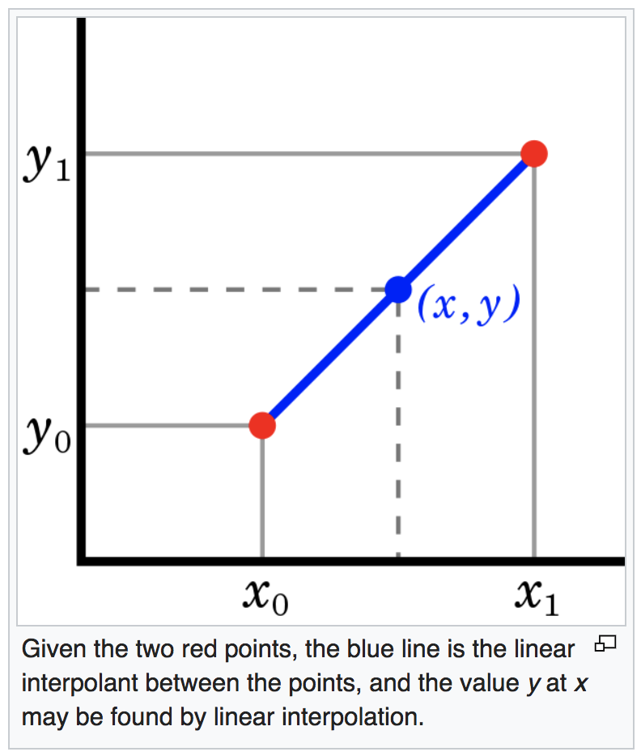

What does it mean to be partway from point A to point B? We could think of it in terms of being some fraction of the way there—one fourth of the way, halfway, three fourths of the way, and so on. When we're at point A, we could say we're "0" of the way to point B. When we arrive at point B, we're all the way there, which is to say "1" of the way there. Along the way we're some fraction of the way there between 0 and 1, and we can state the fraction as decimal, such as 0.25, 0.5, 0.75, etc. Our location between A and B can thus be stated as a number from 0 to 1.
What does it mean to be a fraction of the way between one number and another number? What's halfway from 0 to 100? That's pretty easy to calculate in your head, just intuitively, without even consciously doing any math. Halfway from 0 to 100 is 50. What's one quarter of the way from 0 to 100? 25, of course. Now, what's halfway from 10 to 48? A little harder, but not that hard: 29. What's three fifths of the way from 26.51 to 93.76? Hmm. Okay, now we might actually need to know what we're doing.
It's still not that hard really. We state the fraction as a decimal number, 0.6, we calculate the total distance between point A and point B as 93.76-26.51=67.25, we multiply that distance by 0.6 to get 40.35, and then we add that to the starting point A (26.51) to get 66.86. So, 66.86 is 0.6 of the way from 26.51 to 93.76.
To state that as a generic algebra equation, the value v at fraction f of the way between points a and b is calculated as v=f(b-a)+a. This is known as linear interpolation between two numbers. It's very useful for calculating intermediate values between two known values.
You could reverse that process to answer a question like, "What fraction of the way from 26.51 to 93.76 is 66.86?" In generic terms, "What fraction f of the way from a to b is v?" The formula for that is f=(v-a)/(b-a). You can think of that as: the fraction f is "the distance v is from a" over "the distance b is from a".
Now let's suppose you're thinking of points A and B as two (x,y) coordinates on a 2D Cartesian plane. We'll call those points (x0,y0) and (x1,y1). The method of calculating a point that is some fraction f of the way from (x0,y0) to (x1,y1) is pretty similar. The x coordinate of the point will be f(x1-x0)+x0, and the y coordinate will be f(y1-y0)+y0.
This leads us to another useful concept: identifying a point that is within one range, and finding an analogous point within another range. If a value x lies within the range from x0 to x1 (i.e., lies some fraction of the way from x0 to x1), what value y lies at the analogous position within the range from y0 to y1?

This is known as linear mapping.* We're taking a phenomenon that occurs in one domain (the x axis) and "mapping" it onto another dimension (the y axis). If we know the range of possible x values is xmin to xmax and the range of possible y values is ymin to ymax, and we know the value of x, we can find the analogous value of y; y will be the same fraction of the way from ymin to ymax as x is from xmin to xmax. We can think of x as being the input (in a known range from xmin to xmax), and we want to calculate an output y (in a known range from ymin to ymax). We can do that with this equation:
y = ymin+(ymax-ymin)(x-xmin)/(xmax-xmin)
In the equation, the fraction we want to know is represented by (x-xmin)/(xmax-xmin): "the distance x is from xmin" over "the distance xmax is from xmin". We apply that fraction to "the distance ymax is from ymin" (ymax-ymin), and then add ymin to that.
Here's a real-world musical example. Suppose we're designing a keyboard synthesizer, and we want to map the velocity with which a key is played to the loudness of the note it plays. The MIDI velocity value v we measure ranges from 1 to 127, and the amplitude range we want for the sound is from -60 to 0 decibels. So, we would use the formula:
a = -60+(60)(v-1)/126
What amplitude a would we use for a key played with a MIDI velocity v of 100? The mapping formula tells us -12.857 decibels.
In Max, for linear interpolation between values, there's an object called line for generating timed int or float messages interpolating linearly from one value to another, and there's a corresponding MSP object called line~ that generates a linear signal from its current value to some new value in a given amount of time. Both objects allow you to specify several line segments by providing
For linear mapping Max provides the scale object for messages, and the scale~ object for MSP signals.
Here are some examples in Max/MSP:
*The word "mapping" is used for a reason. It's the same sort of calculation a cartographer does. Imagine drawing a map of California. California is an enormous expanse of land, and we're going to map that as an analogous picture on a piece of paper. On our map, one point represents San Diego and another point represents Los Angeles. We know at what fraction of the distance from San Diego to Los Angeles the city of Irvine lies in the real world, so we can use that fraction to find the analogous point for Irvine on our piece of paper.
This page is by Christopher Dobrian, dobrian@uci.edu.
Last modified March 30, 2019.